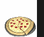
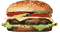

De: La Frikipedia, la enciclopedia extremadamente seria.
De: La Frikipedia, la enciclopedia extremadamente seria. De: La Frikipedia, la enciclopedia extremadamente seria.
| De la serie alimentos y otras vainas: | ||
| ||
| Nombre: | Galleta Danesa | |
| Tipo de Comida: | Pastico | |
| ¿Como se Come? | Masticando lento | |
| ¿De donde Proviene? | Holanda o posiblemente Iraq | |
| Ingrediente Basico: | 99% mantequilla y el resto estabilantes pá dar estructura | |
| Forma de Presentación | No se a llegado a servir nunca | |
| Sabor: | Nadie lo sabe... | |
Misteriosas galletas que segun su caja indican que vienen de Holanda,pero que al abrir alguna de estas simpre hay o alfileres,cachos de telas,fotos y demas cosas que no pueden saciar tu hambre.En algunas aun se percibe el olor a galletas,por lo cual lleva a los cientificos a creer que si existen las galletas danesas.
La mayoria de las personas piensan que estas galletas vienen de Holanda,por sus canales y casas vistosas (y porque pone tambien galletas danesas)que aparecen en sus cajas.Pero hay otra teoria que se piensa que su receta surgio en Afganistan.De las dos teorias,ninguna se ha comprobado porque nadie ha tenido cojones todabia a llamar al fabricante.
La mas aceptada es que la receta tomo forma cuando un cabrero afgano no supo que hacer con la mantequilla sobrantes de sus cabras.Entonces decidio formar bolas,aplanarlas y guardarlas en cajas metalicas para el invierno.Pero un holandes espabilado decido con el formar una compañia en la que el daria la imagen(y estilizar las cajas) y el cabrero el producto.Lamentablemente nadie que viva ha podido decir si su producto era o no decente.Tan solo Chuck Norris,él y Renamon las han probado(con la defuncion de este ultimo)
Tambien se suele creer que las cajas de galletas danesas suele haber galletas danesas.FAIL!.En este mundo NADIE que haya abierto una caja de estas se ha encontrado con su contenido,con posterior cabreo del tio que lo a abierto.Los contenidos mas comunes son:
Suele ser de los contenidos mas comunes y sus propietarias mas comunes,las abuelas(y algun que otro sastre)
Fotos que hizo alguien con un subidon de azucar.Suelen aparecer gente dandose abrazos,o con una rosa en la mano,en blanco y negro.Te quitan las ganas de comer que tubieras al abrirlo y te dan ganas de meterlas fuego.
Posiblemente,otro de los contendios favoritos.Las personas que tienen estas,las dejan al alcance de la vista en el salon,o en otro sito vistoso.Cuando pides que si puedes cojer una,te dice que si y vas a cojerla babeando y te dice "Huy,mi niño,si ya no quedan.¿Quieres otra cosa?" el cabreo que pillas es monumental.Solamente las tienen para joder al personal y ya esta.
Su uso ahora es mas polivalente:siguen sirviendo de cebo para los invitados,de pura decoracion,para guardar tu pistola en caso de ataque reggetonero,etc.Tanto es asi,que le ha llevado a ganar el premio a la Tartera del Lustro,sucedida por la fiambrera del Fallout en varios paises,incluido Holanda
|  Alimentos  |
|---|
| Arroz con leche • Asado • Atún • Atún claro calvo • Bizcocho • Boomer • Chicle • Chocolate • Chorizo • Choripán • Choripavo • Cruasán • Flan • Galleta • Galleta danesa • Gominola • Granola • Hamburguesa • Hot dog • Huevo Kinder • Jamón serrano • Kebab • Lacasito •Pan • Pan Bimbo • Pan con tomate • Pizza • Pizza de piña • Pseudocarne • Queso • Queso rallado • Queso suizo • Repollo • Salsa de soja • Sugus • Taco • Taco gringo • Tamal • Tapa • Tetra • Torta • Tortilla • Tortilla de patata • Tostacos • Waffles |
| Burger King ♦ Kentucky Fried Chicken ♦ La Pasiva ♦ McDonald's ♦ Pizza Hut ♦ Telepizza |
Autor(es):